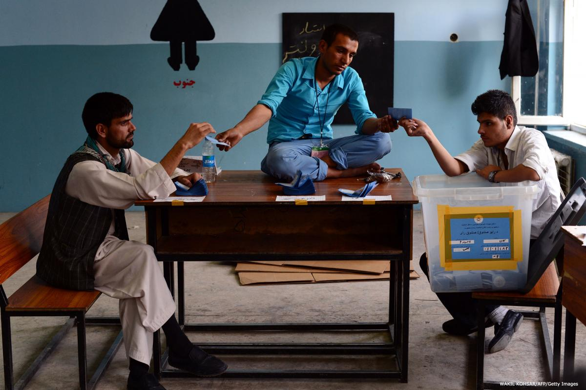

چالشهای پیش روی ناظران انتخابات
نظارت بر انتخابات، هر قدر هم که بر اساس اصول و موازین از پیش تعیین شده و بر اساس استانداردهای پذیرفته شده بینالمللی باشد، همچنان دشوار و پیچیده است. ناظران انتخاباتی در مناطق مختلف با مشکلات و چالشهایی مواجه میشوند که ممکن است راه حل سادهای که در کتابچه راهنما قابل دسترسی است نداشته باشد.
آنچه در پی میآید، مجموعه موقعیتهایی است که ناظران با آن مواجه بودهاند. اندیشیدن به اینکه آیا ناظران در هر کدام از این شرایط تصمیم درستی گرفتهاند یا نه، میتواند در مواجهه با شرایط مشابه برای یک ناظر انتخابات یا هر رایدهنده و شهروند عادی آموزنده باشد. هر کدام از این موارد از زبان ناظری که با آن مشکل درگیر بوده نقل شده است.

آیا مجازیم کمک کنیم؟
حدود پنج سال پیش، برای مقطع کوتاهی ناظر بینالمللی بودم. در طول روز رأیگیری، به شعب مختلف سر زدم و علی رغم ثبت دستکاریهای مکرر در روند رأیگیری، بدون هیچ مشکلی به کار خود به عنوان یک ناظر بیطرف مشغول بودم. اما همین که در ساعت ۷ شعبههای رأیگیری بسته شدند و شمارش آرا آغاز گردید، مشکلات نیز شروع شد.
شمارش نهایی که با نظرات متعدد نمایندگان نامزدهای متفاوت همراه بود، حدود سه ساعت به طول انجامید. به محض اینکه نتایج اعلام شد، برخی از نمایندگان نامزدها شروع به فریاد و اعتراض کردند که به عمد آرا درست شمرده نشدهاند. رییس شعبه پذیرفت که کارکنانش همه آرا را یک بار دیگر بشمارند. این بار شمارش آرا تا ساعت ۱:۳۰ بامداد به طول انجامید اما باز پس از اعلام نتایج، بحث و جدل زیادی پیش آمد.
در کمال تعجب، رییس شعبه این بار از من خواست تا با همکارم رأیها را بشمارم، چراکه معتقد بود همه در مورد بیطرفی ما متفقالقول هستند. همکار من، که به طور اتفاقی آنجا حضور داشت، از سفارت امریکا بود. ما گفتیم که نمیتوانیم زیرا فقط ناظر بودیم. رییس شعبه با ناامیدی به طرف جماعت منتظر بازگشت و بعد از بحث فراوان، پیشنهاد شد که نماینده ناظر جامعه مدنی داخلی آرا را بشمارد.
آن فرد از ما پرسید که آیا مجاز است این کار را بکند یا نه؟ به او گفتم که مطمئناً از لحاظ قانونی درست نیست اما در گزارشم خواهم گفت که چه اتفاقی افتاده و همچنین اشاره خواهم کرد که در این مورد خاص همه موافق بودند که این تنها راه برای حل مشکل است. در نتیجه ناظر جامعه مدنی رأیها را برای سومین بار شمرد و بالاخره در ساعت ۴ بامداد، در حالی که هیچ کس از وضع رضایت نداشت و عدهای هم خوابشان برده بود، نتیجهای به دست آمد که همه افراد، هرچند با ناخشنودی آن را پذیرفتند و صورت جلسه را امضا کردند. (فرد پیروز تغییر نکرده بود)
آیا باید آنجا را ترک کنیم؟
در طول آخرین انتخابات پارلمانی، به همراه یکی از همکارانم ناظر روستایی واقع در ۹۰ کیلومتری اصلیترین شهر تجاری کشور بودیم. به محض شروع روز رأیگیری، شاهد میزان چشمگیری از دخالت منابع دولتی بودیم - از جمله ارعاب توسط پلیس- تا اطمینان حاصل شود که نامزدهای موردنظر حکومت پیروز شوند.
برای شمارش آرا تصمیم گرفته بودیم که به شعبه رأیگیری که در مدرسه بزرگی بود برویم؛ چراکه در طول روز به آن سر زده و تعداد زیادی شکایت از طرف نمایندگان نامزدها از آنجا دریافت کرده بودیم. طی بازدیدهایمان درطول روز، در کمال تعجب فقط یک بار موفق به دیدن رییس شعبه شدیم که آن هم برای خوشآمدگویی ما آمد و کاملا ً مشخص بود که دوست داشت ما از آنجا برویم.
وقتی برای شمارش آرا به آنجا بازگشتیم، او عصبانی شد و شروع به داد و فریاد کرد که ما جاسوس هستیم؛ این درحالی بود که ما به هیچ وجه حرفی نزده بودیم. همکارم رییس شعبه را به کناری کشید و به او اطمینان داد که ما جاسوس نیستیم و فقط برای نظارت آمدهایم و اگر گزارش کنیم که مجبور به ترک آنجا شده ایم خیلی بد خواهد بود. رییس شعبه کمی آرام شد و به کار شمارش آرا که به نظر من یک افتضاح کامل بود برگشت؛ برگههای رأی استفاده شده و نشده با هم مخلوط شده بودند و بحث و جدلهای زیاد و تهدیدهای فراوانی متوجه نمایندگان نامزدها میشد. پس از آنکه کار از نیمه گذشت و دیگر معلوم بود چه کسی پیروز خواهد شد، رییس شعبه به طرف ما آمد و التماس کرد که آنجا را ترک کنیم. همکارم او را تا دفترش همراهی کرد و حدود نیم ساعت در دفتر ماندند، در طول تمام این مدت من داشتم به آشفته بازار باورنکردنی روبه رویم نگاه میکردم.
همکارم که برگشت، به من گفت رییس شعبه که مدیر مدرسه هم بود با حالتی گریان به او گفته که اگر نتیجه از پیش تعیین شده را به دست نیاورد، از کار برکنار خواهد شد. همکار من به او اطمینان داده بود که چیزی به دیگر افراد شعبه نخواهیم گفت و نتیجه آرا هرچه باشد ما به رؤسای خود خواهیم گفت که این موردی حساس بوده است. چیز بیشتری دیگر از او ندیدیم چون که وقتی شمارش آرا داشت به پایان میرسید، سروصدای زیادی بلند شد و همه حواسها را به سمت خود جلب کرد... رییس شعبه دچار حمله قلبی شده بود و آمبولانسی او را از آنجا برد. کاملاً واضح بود که ماجرا ساختگی نیست، چراکه او به مراتب نسبت به بعدازظهر مریضتر به نظر میرسید. همین که آمبولانس آنجا را ترک کرد، معاون شعبه از ما خواست که صورت جلسهای را که همه نتایجش با مداد نوشته شده بود امضا کنیم.
چه باید نوشت؟
طی یکی از نظارتهایم که در منطقهای روستایی بود، متوجه شدم که اطلاعات دریافتی از مترجمم به مراتب بعد از ناهار تغییر کرده و بدترشده بود. انتخابات بدی بود واهمیت ویژهای برای حاکیمت داشت. صندوقها پر از رأی شده بودند و تعداد رأیدهندگان بسیار کم بود. ما به طور سرزده وارد یکی از شعبهها شدیم که به طور کاملاً آشکاری نتیجه از قبل تعیین شدهای در سر داشتند. متاسفانه، به محض ورود ما صندوقهای رأی ناپدید شدند – به بهانه تعمیر- و کارکنان شعبه هم به طور مشهودی دستپاچه و عصبانی بودند، هرچند که من بسیار کم حرف زدم.
مترجم به دو سؤالی که پرسیده بودم پاسخ داد – صندوقهای رأی کجا هستند و اینکه چه تعمیراتی نیاز داشتند که بسیار عجیب به نظر میرسید. با زبان دست و پا شکستهای که بلد بودم متوجه شدم که جایی از کار میلنگد. مترجمم را به بیرون بردم تا یک چای عصرانه بخوریم. او به من گفت که کارکنان شعبه او را میشناختند و تهدیدش کرده بودند اگر گزارش کنیم که صندوقهای رأی در تمام مدت در دیدرس کامل نبودهاند و... شب بعد از انتخابات به سراغش خواهند آمد. به او گفتم خیلی بعید است که آن افراد حتی پی ببرند که ما در گزارشهایمان چه نوشتهایم، چون که این میزان از جزییات معمولاً بنا به همین دلایل منتشر نمیشود. اما با این وجود، به او گفتم تا به شعبه رأیگیری دیگری برویم.
به همه باید فرصت داد؟
یک بار به عنوان ناظر در موقعیت بسیار دشواری گرفتار شده بودم که باید تصمیم میگرفتم آیا فردی میتواند رأی دهد یا خیر؟
حدود نیم ساعت پیش از زمان تعیین شده تعطیلی شعبه بود. تعداد خیلی خوبی شرکت کرده بودند و در چهل دقیقه آخر تنها یک نفر رأی داده بود. کارکنان شعبه تصمیم گرفتند که برای صرفه جویی در وقت، شروع به باطل کردن مابقی برگههای رأی کنند و از این رو گوشه برگههای رأی باقی مانده را پاره کردند. من چیزی نگفتم اما برخی نمایندگان کاندیداها اعتراض کردند.
مطمئنم که میتوانید تصور کنید چه اتفاقی افتاد. حدود ۵ دقیقه قبل از بسته شدن شعبه، همه برگههای رأی استفاده نشده، بیاعتبار شده بود. هرچند که ما در آن زمان این مسئله را نمیدانستیم - در همین بین پیرمردی برای رأی دادن از راه رسید! به او گفتند که خیلی دیر آمده است، اما یکی از نمایندگان کاندیداها اشاره کرد که هنوز سه دقیقه به پایان زمان رأیگیری باقیمانده است واز من پرسید که آیا موافقم؟ در پاسخ گفتم که بله، به ساعت من هم شما درست میگویید.
داد و فریاد بالا گرفت. پس از دقایقی، یکی از کارکنان شعبه پیشنهاد داد که از برگههای باطل شده استفاده کنیم و نظر مرا در این باب جویا شدند. من گفتم که دو مشکل وجود دارد. اولاً، در این صورت دیگر رأی مخفی معنا ندارد و همه خواهند فهمید که رأی پیرمرد کدام است. در ثانی، قطعاً این کار ناقض قوانین انتخاباتی هم هست... رییس شعبه گفت که این مسایل را میداند اما او نیز باید امکان رأی دادن را برای همه به طور قطع فراهم کند و در این صورت این امر ممکن خواهد شد؛ به خصوص اگر که من روی پاکت را امضا کنم و تأیید کنم که رأی در صندوق قرار گرفته است.
حساسیتهای فرهنگی
در طول دورانی که به نظارت مشغول بودم، مکرراً اعمال و رفتاری دیدم که که علیرغم نقض قوانین انتخاباتی، با آداب و رسوم محلی مطابقت داشت. در یکی از موارد، مردی را دیدم که با دستهای پاسپورت وارد شعبه شد و برای تمام اعضای خانوادهاش درخواست برگه رأی کرد. کارکنان شعبه هم به همان تعداد برگه رأی در اختیارش گذاشتند. او جلوی اسمها در لیست رأیدهندگان را امضا کرد، سپس به کابین رفت و به جای همه اعضای خانوادهاش رأی داد.
همین که او آنجا را ترک کرد، یکی از نمایندگان جامعه مدنی نزد رییس شعبه رفت و از کارکنان شعبه گلایه کرد و بحث مفصلی در مورد لزوم حفظ قانون هم زمان با احترام و حفظ فرهنگ درگرفت. رییس شعبه سپس رو به من کرد و نظر مرا در این زمینه جویا شد. گفتم که من نمیتوانم در مورد اینکه چه چیزی در آداب و رسوم درست است نظر دهم، اما کاملاً واضح است که قانون انتخابات در این مورد چه گفته است. سپس از او پرسیدم که به عنوان نماینده کمیسیون انتخابات، به نظرش کدام یک برتری دارد: قانون یا آداب و رسوم؟ او گفت که میداند قانون بالاتر است اما برخلاف من و نماینده جامعه مدنی، او بعد از انتخابات هم میخواهد در این روستا زندگی کند. سپس افزود که اگر از خود اعضای خانواده هم که نیامده بودند رأی بدهند بپرسیم– آنها به احتمال قوی این موضوع را خواهند پذیرفت. در پاسخ گفتم که ما نمیتوانیم بدون اینکه واقعاً از آنها پرسیده باشیم به این مسئله پی ببریم، کما اینکه به هر شکل زیرپا گذاشتن قانون را هم توجیه نمیکند.
بعد از این بحث او پرسید که در گزارشم چه خواهم نوشت.... من هم به او گفتم که موظف هستم هر آنچه اتفاق افتاده است را گزارش دهم، اما به طور خاص به این امر اشاره خواهم کرد که این مسئله کاملاً آزادانه و بدون مخفی کاری انجام شد و در موردش بحث هم کردیم. او سپس به من گفت که اگر من این موضوع را گزارش کنم، او در انجام وظیفهاش ناکام میشود. من در پاسخ گفتم که کار من قضاوت کردن در مورد اینکه آیا او ناکام میماند یا خیر نیست - بلکه به....
اهمیت قانون
یک بار در شعبه رأیگیری واقع در روستایی دورافتاده بودم که مردم بدون نشان دادن هرگونه مدرک شناسایی، برگه رأی دریافت میکردند. در بیرون از شعبه جوانی را دیدم که به من گفت وقتی خواسته رأی دهد، مانع شدهاند و او را دور کردهاند، چراکه میگفتند یک بار قبلاً رأی داده است. رفتم و از رییس شعبه پرسیدم که چرا کارکنان شعبه از مردم نمیخواهند که مدرک شناسایی نشان دهند. او خندید و گفت آنها همیشه این گونه رفتار میکنند، چرا که همه مردم را در صف با نگاه میشناسند و در نظر دارند. او افزود که درخواست ارائه مدرک شناسایی نوعی توهین است.
از او پرسیدم که چرا آن مرد جوان نتوانست رأی دهد. او گفت به این دلیل که مست بوده و فراموش کرده که صبح آمده و رأی داده است. به او گفتم که فکر میکنم این برخلاف قانون انتخابات باشد که اجازه بدهیم افراد بدون نشان دادن مدارک شناسایی رأی دهند و من همه این اتفاقات را در گزارشم ثبت خواهم کرد. (در آن موقع قانون انتخابات را همراه خودم نداشتم) او بسیار عصبانی شد و گفت برایش مهم نیست و به نظر او این کار درست است. بعد از آن من قانون انتخابات را دوباره بررسی کردم و مطمئن شدم که در تمام آن مدت حق با